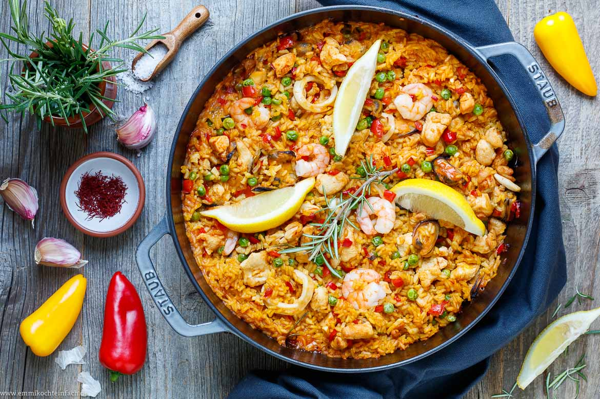

Return home
Paella

Description
This traditional Spanish rice dish is an incredibly tasty addition to your
cooking repertoire!
Ingredients
- 1 pckg. seafood
- 250g rice
- 80g peas
- 2 onions
- 2 cloves of garlic
- 1 red pepper
- 6 tbsp. olive oil
- Saffron
- Paprika powder
- 700ml vegetable broth
- 100ml white wine
Steps
-
Heat the olive ol and sauté the onion together with half of the garlic
- Add the rice and season with saffron and pepper
- Add wine and broth
- Cook while stirring
- Heat olive oil in a second pan
- Add the seafood, peas, pepper (cut in stripes) and garlic
- Fry for a short time and add to the rice
- Let it cook until most of the broth has dissipated
- Season with paprika powder, pepper and salt